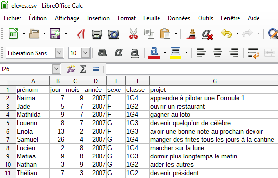

Fichier CSV ouvert avec un éditeur de texte.
Organiser des données sous forme de tableaux est très répandu et très ancien car on retrouve des tables de données dans les livres de comptes de l'Egypte ancienne.
On peut organiser des données dans un tableau pour présenter des informations croisées, faire ses comptes, etc. Le bulletin d'un élève est une table qui indique pour chaque matière, la moyenne de l'élève, la moyenne de la classe, l'appréciation du professeur. La liste de présence des élèves est également représentée sous forme d'une table indiquant pour chaque élève s'il est présent ou absent ce jour.
En informatique, les tables de données sont rapidement devenues le principal moyen de stocker des données. L'analyse de ces données est utilisée dans de nombreux domaines : calcul scientifique, intelligence artificielle, programmation Web, bio-informatique, informatique financière, etc. De nombreuses données en tables sont disponibles sur les sites de données ouvertes.
Exemple
Voici un exemple de table avec des informations sur des élèves :
| prénom | jour | mois | année | sexe | projet |
|---|---|---|---|---|---|
| Fathi | 3 | 2 | 2003 | G | être heureux |
| Evan | 19 | 8 | 2004 | G | manger une glace |
| Aline | 29 | 10 | 2004 | F | gagner au loto |
| Baptiste | 6 | 12 | 2002 | G | devenir quelqu’un de célèbre |
| Corentin | 8 | 4 | 2004 | G | avoir une bonne note au prochain devoir |
| Estelle | 29 | 3 | 2004 | F | devenir astronaute |
| Elisa | 7 | 1 | 2004 | F | marcher sur la lune |
| Yanis | 17 | 11 | 2004 | G | dormir plus longtemps le matin |
| Leonie | 28 | 10 | 2004 | F | aider les autres |
| Lilian | 26 | 10 | 2004 | G | apprendre à piloter une Formule 1 |
Pour exploiter ces données avec un ordinateur il est nécessaire de les mémoriser dans un fichier.
Il existe différents formats permettant de mémoriser les informations d'une table dans un fichier. Un des plus utilisés est le format CSV (pour l'anglais comma-separated values, soit "données séparées par des virgules") qui est un fichier texte dans lequel :
Ainsi, la table précédente peut être mémorisée dans un fichier CSV dont voici le contenu :
"prénom","jour","mois","année","sexe","projet"
"Fathi",3,2,2003,"G","être heureux"
"Evan",19,8,2004,"G","manger une glace"
"Aline",29,10,2004,"F","gagner au loto"
"Baptiste",6,12,2002,"G","devenir quelqu’un de célèbre"
"Corentin",8,4,2004,"G","avoir une bonne note au prochain devoir"
"Estelle",29,3,2004,"F","devenir astronaute"
"Elisa",7,1,2004,"F","marcher sur la lune"
"Yanis",17,11,2004,"G","dormir plus longtemps le matin"
"Leonie",28,10,2004,"F","aider les autres"
"Lilian",26,10,2004,"G","apprendre à piloter une Formule 1"
Fichier CSV ouvert avec un éditeur de texte.
Bien qu'étant un simple fichier texte, un fichier CSV peut être importé et exporté par un tableur qui permet d'en visualiser le contenu sous la forme d'un tableau.
Remarques :
- En France, le caractère de séparation des champs est généralement le point-virgule (";") car la virgule est utilisée pour écrire des nombres décimaux. Il faut donc être vigilant sur le caractère de séparation utilisé.
- Le format CSV est apparu en 1972, soit bien avant l'avènement des ordinateurs personnels.

Fichier CSV ouvert avec un tableur.
Pour exploiter et manipuler des tables de données mémorisées dans un fichier CSV, il faut commencer par charger les données. On pourra ensuite utiliser toute la puissance d'un langage de programmation pour les exploiter.
Pour importer les données d'un fichier CSV dans Python il faut commencer par ouvrir le fichier avec Python. On utilise pour cela la fonction prédéfinie open.
# on ouvre le fichier eleves.csv dans un objet appelé 'fichier'
fichier = open('data/eleves.csv', 'r', encoding = 'UTF-8')
On a utilisé le paramètre
'r'pour indiquer une ouverture en mode lecture (read en anglais).
Il faut ensuite lire le fichier pour charger son contenu dans Python. On pourrait pour cela utiliser la méthode read qui renvoie le contenu du fichier sous la forme d'une unique chaîne de caractères.
texte = fichier.read() # on lit le contenu sous la forme d'une unique chaine de caractères
print(texte) # on affiche la chaine de caractères 'texte'
# on ferme le flux de lecture
fichier.close()
Cependant, ce n'est pas ainsi que l'on va procéder car exploiter cette grande chaîne de caractères n'est pas pratique. En effet, il sera beaucoup simple et efficace de manipuler des types construits comme les tableaux et surtout les dictionnaires.
Ainsi, on va plutôt lire le contenu du fichier pour construire un tableau dans lequel chaque élément correspond à une ligne de la table. Il est possible de représenter chaque ligne de la table par un tableau ou par un dictionnaire.
Le chargement dans tableau de dictionnaire est préférable car il est alors facile d'accéder aux données par leurs clés.
Pour cela, la biliothèque standard de Python contient un module
csvqui contient des fonctions très pratiques pour lire et écrire des fichiers CSV. La mémorisation dans un tableau devenant alors très rapide. Voici comment on procède.
La méthode DictReader permet de lire la table ligne à ligne et renvoie successivement pour chaque ligne un dictionnaire des champs de cette ligne. La première ligne du fichier a servi à obtenir les clés utilisées pour chaque enregistrement.
On peut alors construire par compréhension le tableau eleves qui mémorise toutes les données de la table, chaque élément de ce tableau étant un dictionnaire correspondant à une ligne de la table de données.
import csv # pour utiliser le module csv
# Ouverture du fichier
fichier = open('data/eleves.csv', 'r', encoding = 'UTF-8')
# Lecture de son contenu avec la méthode DictReader qui renvoie une valeur spéciale représentant le fichier CSV
table = csv.DictReader(fichier, delimiter=',') # on précise le caractère de séparation, ici la virgule
# Construction par compréhension du tableau représentant la table
eleves = [dict(ligne) for ligne in table] # chaque élément est un dictionnaire
print(eleves) # pour afficher le contenu du tableau 'eleves'
fichier.close()
Chaque ligne est représentée par un dictionnaire et on peut accéder à n'importe quelle donnée. Par exemple, comme la clé correspondant au sexe est sexe, on peut accéder au sexe du deuxième élève avec l'instruction
eleves[1]['sexe']
On peut aussi accéder au projet de Justine avec l'instruction
eleves[10]['projet']
Même en mémorisant chaque ligne de la table dans un dictionnaire, tout n'est pas encore parfait. En effet, pour trouver le projet de Justine, il faut savoir que la ligne la concernant a pour index 10 dans le tableau. Je vous laisse imaginer ce que cela peut donner pour trouver un index dans des fichiers de plusieurs dizaines de milliers de lignes... Heureusement, il est possible de chercher plus efficacement des données dans une table, c'est ce qui est expliqué ci-après.
Une fois les données chargées dans une table, il est possible de travailler sur ces données en utilisant les opérations de manipulation sur les tableaux et les dictionnaires. En particulier, on va pouvoir effectuer une recherche en parcourant le tableau ligne par ligne, c'est-à-dire dictionnaire par dictionnaire.
On cherche ici à détecter la présence d'un élément dans une table (un élève dans notre cas). Nous allons utiliser des techniques de recherche dans un tableau comme celles dans le chapitre "Algorithmes de parcours séquentiel d'un tableau" (Thème 7, Chapitre 1).
Pour rappel, voici la fonction appartient qui renvoie True ou False selon la présence ou l'absence d'un élément v dans un tableau T.
def appartient(v, T):
"""Renvoie True si v appartient au tableau T, False sinon."""
for e in T:
if e == v:
return True
return False
On va légèrement adapter cette fonction pour chercher un élève désigné par son prénom dans notre table.
def appartient(p, eleves):
'''
Renvoie True si le prénom p est dans le tableau eleves, et False sinon.
p est un chaîne de caractères et eleves est un tableau de dictionnaires.
'''
for eleve in eleves:
if eleve['prénom'] == p:
return True
return False
Explications : on passe en revue tous les éléments du tableau (chaque dictionnaire eleve) et on teste si l'un d'entre eux possède un attribut 'prénom' égal à p, autrement dit si un des élèves a le prénom p.
On peut alors appeler cette fonction pour tester la présence d'un élève.
Pensez à exécuter à nouveau, si besoin, la première cellule du paragraphe précédent intitulé Chargement dans un tableau de dictionnaires qui charge les données de notre table dans le tableau
eleves.
appartient('Esteban', eleves)
appartient('Marie', eleves)
On peut adapter la fonction précédente pour qu'elle renvoie le projet de l'élève dont le prénom est entré en paramètre.
def projet_de(p, eleves):
'''
Renvoie le projet de l'élève prénommé p dans le tableau eleves, et None si aucun prénom ne correspond.
p est un chaîne de caractères et eleves est un tableau de dictionnaires.
'''
for eleve in eleves:
if eleve['prénom'] == p: # si un élève a le prénom p
return eleve['projet'] # on renvoie le projet de cet élève
return None
projet_de('Justine', eleves)
Il est possible de préciser la recherche en combinant les conditions sur plusieurs attributs. On peut par exemple, rechercher le prénom d'un élève né l'année a et le mois m.
def nom_eleve(a, m, eleves):
''' a et m sont des entiers et eleves est un tableau de dictionnaires '''
for eleve in eleves:
if int(eleve['année']) == a and int(eleve['mois']) == m: # CONVERSION de l'année et du mois en des entiers (int)
return eleve['prénom']
return None
nom_eleve(2004, 4, eleves)
Remarques :
'année' et 'mois' en type int pour comparer des variables de même type. Les fonctions proposées parcourent la table ligne par ligne jusqu'à trouver la donnée correspondant aux critères de recherche, et la renvoie. Cependant, plusieurs lignes de la table (ici plusieurs élèves) peuvent correspondre à la recherche effectuée et on aimerait pouvoir rechercher dans toutes ces lignes (par exemple, renvoyer les prénoms de tous les élèves nés une certaine année et pas seulement le premier rencontré). Nous allons voir comment procéder dans le paragraphe suivant.
Toutes les opérations précédentes permettent de produire des résultats simples : afficher le projet d'un élève, ou son sexe, ou son prénom...
Or, dans le domaine du traitement de données, il est très souvent nécessaire d'extraire différentes données d'une table pour en construire une nouvelle. Par exemple, extraire tous les élèves qui sont nés un mois donné afin de leur souhaiter un bon anniversaire.
Pour cela, il suffit de sélectionner les lignes vérifiant une certaine condition pour produire une nouvelle table. Cette condition peut combiner plusieurs critères. Pour créer cette nouvelle table, on peut avantageusement la construire par compréhension.
Syntaxe
On utilise la syntaxe classique d'une construction par compréhension mais en ajoutant une condition avec un if :
selection = [ligne for ligne in table if criteres]
Ainsi, on crée un nouveau tableau selection qui contient uniquement les lignes du tableau table de départ qui vérifient la condition criteres, et pas les autres.
Par exemple, on peut créer un nouveau tableau nes_fevrier qui contient tous les (dictionnaires des) élèves de la table eleves qui sont nés en février.
nes_fevrier = [eleve for eleve in eleves if int(eleve['mois']) == 2]
nes_fevrier # affichage du résultat
Ce tableau nes_fevrier représente la nouvelle table de données suivante.
| prénom | jour | mois | année | sexe | projet |
|---|---|---|---|---|---|
| Fathi | 3 | 2 | 2003 | G | être heureux |
| Justine | 10 | 2 | 2004 | F | devenir présidente |
On a sélectionné les lignes complètes correspondant à certains critères. Cela signifie que toutes les colonnes ont été ajoutées à la table créée. On peut aussi très facilement construire un nouveau tableau ne contenant que certaines colonnes de la table de départ, ce que nous allons voir maintenant.
Si on ne souhaite sélectionner que certaines colonnes de la table de départ, on dit que l'on fait une projection sur ces colonnes.
On peut construire un nouveau tableau en faisant une projection sur une seule colonne, par exemple les prénoms.
t0 = [eleve['prénom'] for eleve in eleves]
t0
On peut aussi projeter sur plusieurs colonnes, en reconstruisant des dictionnaires ne contenant que les attributs souhaités, par exemple les prénoms et les projets :
t1 = [{'prénom': eleve['prénom'], 'projet': eleve['projet']} for eleve in eleves]
t1 # pour voir le contenu
Il est bien sûr possible de combiner une sélection sur les colonnes avec une sélection sur les lignes. Ainsi, l'instruction
t2 = [eleve['prénom'] for eleve in eleves if eleve['sexe'] == 'G']
t2 # pour voir le contenu
permet de créer un tableau contenant les prénoms des garçons de la classe. On a donc sélectionné la première colonne contenant les prénoms des élèves mais seulement les lignes correspondant à des garçons.
On peut bien sûr aussi sélectionner plusieurs colonnes tout en sélectionnant certaines lignes. Par exemple, on peut sélectionner les attributs 'prénom' et 'projet' mais uniquement des filles de la classe.
t3 = [{'prénom': eleve['prénom'], 'projet': eleve['projet']} for eleve in eleves if eleve['sexe'] == 'F']
t3 # pour voir le contenu
csv permettait facilement de mémoriser les données d'une table dans un tableau de dictionnaires.Nous verrons au cours d'un TP l'intérêt de faire un prétraitement adapté des données pour répondre aux problématiques suivantes :
Tout ce qui est fait sur le traitement des données en classe de Première est un avant-goût des bases de données qui seront étudiées en classe de Terminale.
Sources :
Germain BECKER & Sébastien POINT, Lycée Mounier, ANGERS